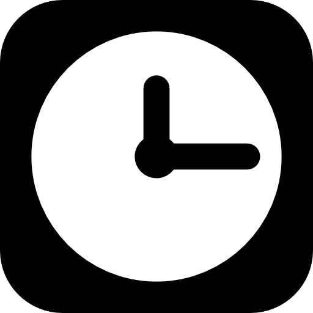

La Plateforme/Start
En 1 an, devenez un professionnel du numérique DÉVELOPPEMENT // RÉSEAUX // SYSTÈME // HARDWARE

Durée
12 mois dont 6 mois alternanceLieu
Marseille
Modalité
40% école60% entreprise

Budget
Gratuit pour les apprenants
Certification
RNCP niveau Bac à Bac+212 mois pour devenir un professionnel du numérique
A qui s’adresse la formation ?La formation est ouverte à tous. Elle s’adresse particulièrement aux personnes souhaitant accéder à des postes dans le domaine du numérique et ne pouvant pas se permettre de suivre un « long » cursus de formation (3-5 ans). (personnes souhaitant accéder rapidement à l’emploi, +25ans, éloignés de l’emploi, inscrits au pôle emploi).
La formation dure 12 mois, elle est totalement prise en charge financièrement. Vous serez rémunéré durant les 6 mois d’alternance
 Descriptif de la formation
Descriptif de la formation
La formation commence par un « starter » de 3 mois (septembre – novembre) durant lequel 4 thèmes sont abordés :
- Hardware : Quels sont les composants d’un ordinateur ? Comment fonctionnent-ils ? Quels sont leurs relations ?
- Système : Installation de machines virtuelles, systèmes d’exploitations, linux, lignes de commandes, installation de services
- Réseau : Fonctionnement des réseaux, communication entre périphériques, adressage IP
- Programmation : Logique du code, algorithmie
A l’issue du starter vous pourrez choisir parmi les 3 spécialisations proposées :
- Développement Web
- Réseaux et téléphonie IP
- Maintenance et dépannage Informatique
Nos formations d’apprentissage
- 3 mois intenses (décembre – février) permettent de monter en compétence sur la spécialisation choisie afin d’intégrer une entreprise dès le mois de mars.
- L’alternance dure 6 mois (mars – août) au rythme de 60% en entreprise, 40% en centre de formation.
- A l’issue de la formation, vous pourrez choisir de continuer à exercer votre métier au sein d’une entreprise ou poursuivre votre formation au sein du Bachelor IT.